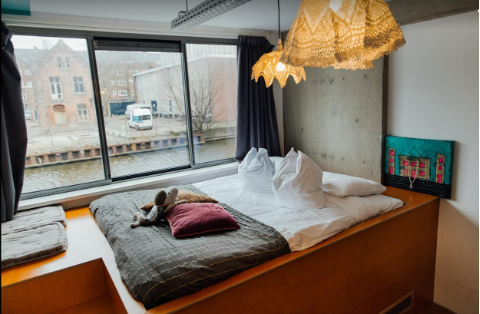
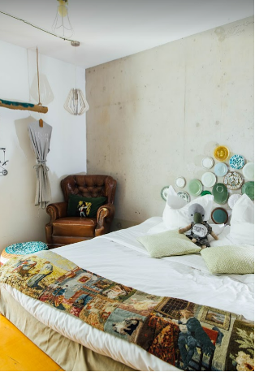

Duurzaamheid
Wat doet Ecomama?
We delen de aarde nou eenmaal met z’n allen. Daarom doet Ecomama van alles om hun hotel zo duurzaam mogelijk te maken.
Voor de inrichting gebruikt Ecomama tweedehands meubels. Ook is er van alles DIY gemaakt en ook daarbij worden tweedehands materialen gebruikt. Bijvoorbeeld de receptietafel, die gemaakt is van oude boeken en andere gebruikte materialen. Ook worden er veel onbewerkte materialen gebruikt zoals cement en hout.

Wat betreft technologie doet Ecomama de check-ins digitaal, zodat er geen papier gebruikt hoeft te worden. Door de bewegingssensoren wordt er geen energie verspild en Ecomama heeft zelfs smart keys die bijv. het licht in de kamer aanzetten.
In het cafe worden lokale en fair-trade producten gebruikt, het afval wordt gescheiden en er voedselverspilling wordt zoveel mogelijk voorkomen. Er wordt geen single-use plastic gebruikt.

De matrassen zijn van Coco-mat, die gemaakt zijn van duurzame materialen. En in plaats van een dagelijke schoonmaakdienst kunnen de gasten zelf ervoor kiezen om hun kamer te laten schoonmaken.
Tot slot is Ecomama partners met duurzame bedrijven, Too Good To Go die voedselpakketten verkoopt zodat er geen eten wordt verspild, en The Good Roll, die boomvriendelijk en duurzaam toiletpapier maakt.

En dat is nog lang niet alles! Maar zo heb je een indruk van de manieren die er zijn om te verduurzamen. Nu je dit weet, voel je je misschien wel gemotiveerd om zelf ook aan te slag te gaan. De vraag is alleen nog: hoe doe je dat?